← balik halaman dengan panah atau geser →
Enam Bulan Perjalanan Cinta Kita
26 Maret 2026 sampai 26 September 2026
di dalam buku ini ada cerita,
foto, dan doa-doa kecil kita
bagian pertama, dari hati
Ada enam bulan yang biasanya lewat tanpa jejak. Enam bulan yang bagi banyak orang hanya sederet tanggal di kalender. Tapi enam bulan ini, bagiku, adalah halaman-halaman yang ingin kutulis pelan-pelan, supaya jangan ada satu momen pun yang hilang begitu saja.
Buku kecil ini kubuat untuk kita. Untuk menghentikan waktu sejenak, menyelipkannya di antara dua sampul, dan merayakan semua yang sudah kita lewati sejak bulan Maret lalu sampai hari ini.
Di dalamnya ada cerita-cerita yang mungkin sudah kau tahu, tapi kutulis ulang dengan cara yang berbeda: dengan jujur, dengan penuh rasa, dan dengan segenap syukur bahwa aku boleh menjadi bagian dari hidupmu.
Kalau suatu hari kamu sedih, atau lupa seberapa berharganya jalan ini, buka lagi buku ini. Semua jawabannya ada di sini, di tiap kertas yang kubalik pelan-pelan untukmu.
untuk Ara, pembaca pertama dan satu-satunya
bagian kedua, sebelum cerita dimulai
Orang bilang enam bulan itu sebentar. Tapi ketika kuingat betapa banyak tawa, obrolan sampai larut, pesan selamat pagi, dan tiga puluh episode candaan yang hanya kita berdua yang mengerti, enam bulan ini terasa seperti satu dekade kecil yang penuh.
Aku juga ingat betapa sering kita melewati perbedaan: beda cara berpikir, beda mood, beda selera musik. Justru di situ aku makin yakin bahwa bersama bukan berarti sama, melainkan berani tetap memilih setiap hari walau berbeda.
Buku ini bukan sekadar perayaan enam bulan. Ia perayaan atas usaha kita berdua yang terus saling menjaga, sesuatu yang lebih besar sedang kita pelihara pelan-pelan. Terima kasih sudah mau merawatnya bersamaku.
Halaman-halaman berikut kubuat untuk kita balik pelan-pelan. Kubayangkan kamu membaca sambil senyum-senyum kecil, lalu kita bikin lebih banyak cerita lagi untuk halaman-halaman berikutnya.
mari kita mulai, dari halaman paling awal
Halaman Satu
Sabtu, 4 April 2026, First Date
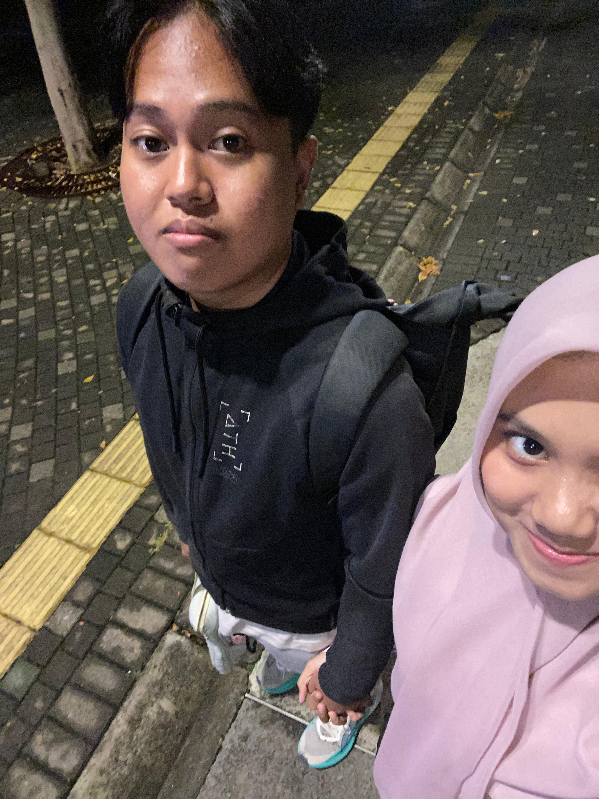
Kalau ada satu hari yang mengubah komposisi seluruh hidupku, itu adalah hari ini. Sabtu, 4 April 2026. Aku masih ingat persis detil-detilnya: mengecek jam lima kali sebelum berangkat, bertanya-tanya apakah bajuku cukup layak, dan deg-degannya rasanya mau ikut ujian nasional.
Tapi begitu bertemu kamu, semuanya berubah jadi tenang. Lima menit pertama kita banyak diam, tapi bukan diam yang canggung, melainkan diam yang nyaman, seperti dua orang yang baru bertemu tapi sudah seperti teman lama.
Lalu kita mulai mengobrol. Aku bercerita hal-hal receh, dan kamu tertawa. Dan di situlah, dari tawa itu, untuk pertama kalinya aku mencatat dalam hati: “aku tidak mau lupa suara ini.”
Pulangnya aku hanya bisa senyum-senyum sendiri. Malam itu terasa beda dari malam-malam sebelumnya, bukan karena ada yang mengucap I love you, tapi karena ada rasa yang diam-diam tumbuh: aku suka sama kamu, betul-betul suka.
Ibi
Halaman Dua
20 Mei 2026, Ultah Ibi ke-20
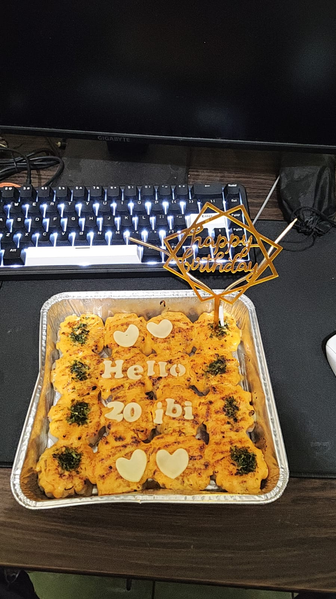
Bagi kebanyakan orang, ulang tahun itu tentang kue, lilin, dan doa. Tapi ultahku yang ke-20 tahun ini aku mendapat hadiah yang tidak pernah kubayangkan: kamu.
Kamu ingat tanggalnya. Kamu mengirim ucapan lewat tengah malam, lalu menyanyikan “Selamat Ulang Tahun” dengan nada yang sedikit fals tapi sangat lucu, dan itu justru telinga yang paling nyaman mendengarnya.
Ada hal-hal kecil yang membuat seorang laki-laki merasa terlihat: ketika kamu hafal tanggal yang kadang aku sendiri lupa, ketika kamu bertanya “kamu sudah makan?”, ketika kamu ikut bahagia untuk kebahagiaan sekecil apa pun. Itulah kamu, dan itulah yang aku cintai.
Umur dua puluh terasa lebih dewasa bukan karena angkanya bertambah, tapi karena di angka itu ada kamu. Terima kasih sudah mau merayakan hidupku, bahkan untuk hal yang paling sederhana sekalipun.
Ibi, 20 tahun
Halaman Tiga
7 Juni 2026, Second Date di Sakuta Coffee, Bintaro
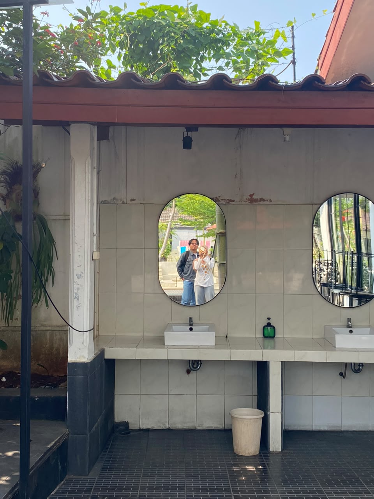
Orang bilang tempat biasa bisa menjadi istimewa kalau yang duduk di seberangmu istimewa. Sakuta Coffee, Bintaro, adalah buktinya. Bukan karena kopinya luar biasa, tapi karena kita pernah duduk lama di sana, mengobrol tentang apa-apa dan hal-hal yang tidak habis-habis.
Ada sesuatu yang jujur dari janji bertemu untuk kedua kalinya. Kalau yang pertama adalah keberanian, maka yang kedua adalah pilihan. Dan dari pilihan itu aku belajar bahwa kamu memang mencariku, bukan sekadar menoleh.
Kita memesan dua gelas, berbagi satu meja, berbagi tawa, berbagi cerita. Diam-diam aku berharap meja ini, kopi ini, dan kamu, ceritanya panjang. Setidaknya sampai gelasnya benar-benar kosong. Dan syukurnya, cerita kita tidak berhenti sampai di situ.
Sampai sekarang, setiap aku melewati Bintaro dan melihat Sakuta, aku tersenyum sendiri. Bukan karena kopinya. Karena ingat bahwa di sana aku pernah sekaligus merasa.
Ibi
Halaman Empat
6 Agustus 2026, Ultah Ara ke-21, Bintaro Xchange
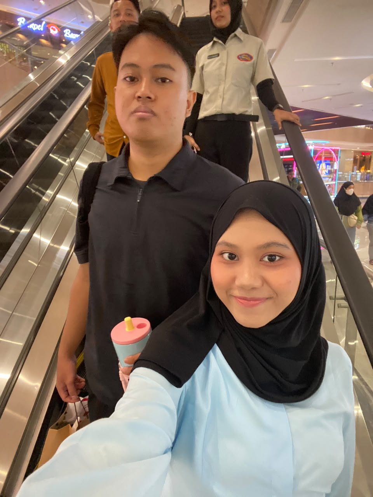
Ada ulang tahun yang sekadar dirayakan, dan ada ulang tahun yang terasa seperti perayaan kecil bagi orang yang sangat kamu sayangi. Ultahmu yang ke-21 di Bintaro Xchange adalah yang kedua.
Sampai sekarang aku masih ingat wajahmu saat melihat kejutannya. Kamu mengucapkan sedikit kata, tapi matamu bicara banyak hal. Di saat itulah aku tahu: semua persiapan, deg-degannya, bolak-baliknya, terbayar lunas.
Kita memotong kue, kamu meniup lilin, dan di antara tawa-tawa itu aku berdoa dalam hati satu hal yang paling serius: “Tuhan, tolong izinkan aku ada di setiap ulang tahunnya, mulai sekarang.”
Umur dua puluh satu itu muda, tapi kamu sudah tumbuh dengan cara yang paling cantik: dewasa, tulus, dan pelan-pelan selalu memperbaiki hidupku. Aku bangga menjadi bagian dari ceritamu.
Jadi ini janji kecilku: di setiap kue ulang tahunmu nanti, aku akan berusaha menjadi orang paling depan yang tersenyum untukmu.
Ibi
sebagian foto dari buku cerita kita, klik untuk memperbesar
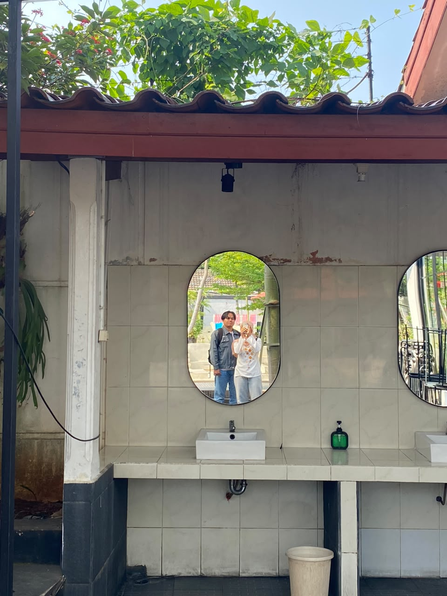
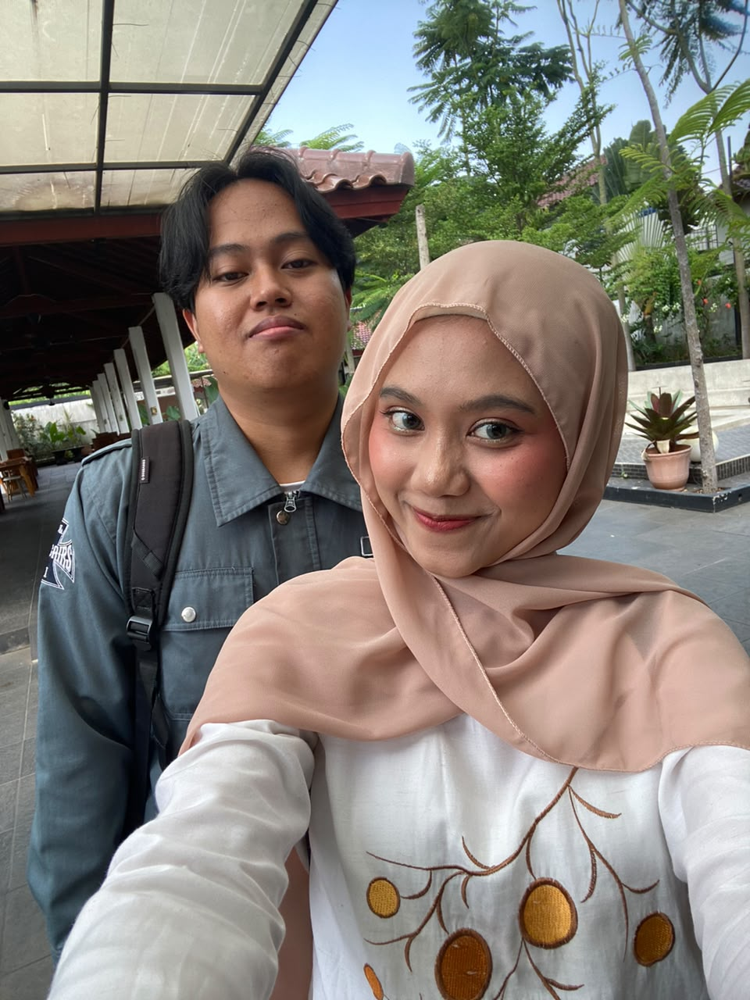
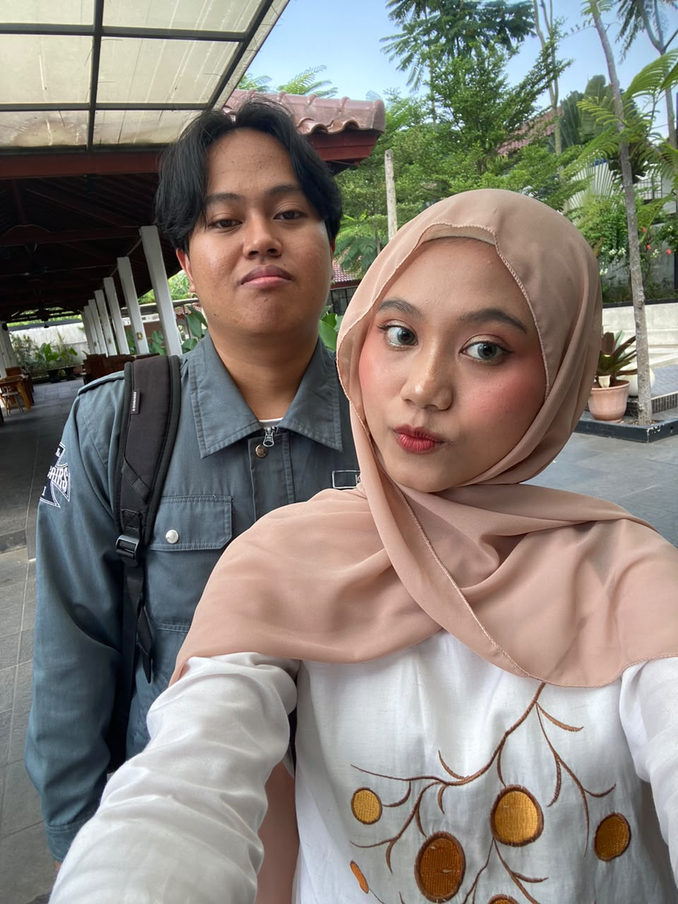
enam potret ini kubingkai dengan hati, melanjutkan ke halaman berikut …
dan sisanya, dari hari yang paling ceria
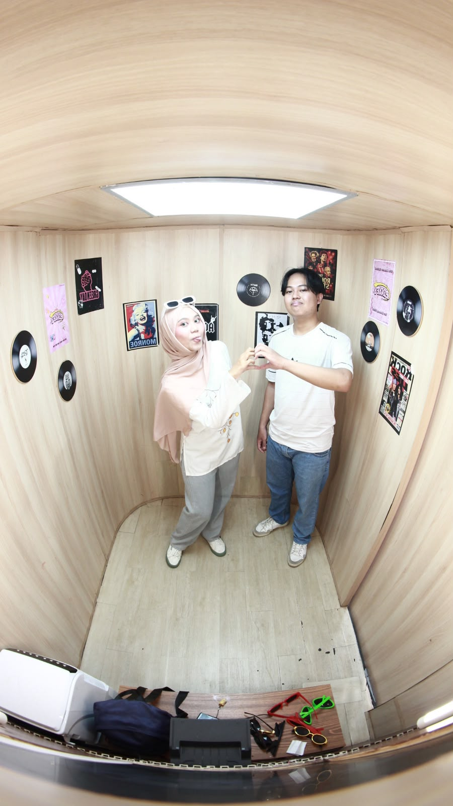
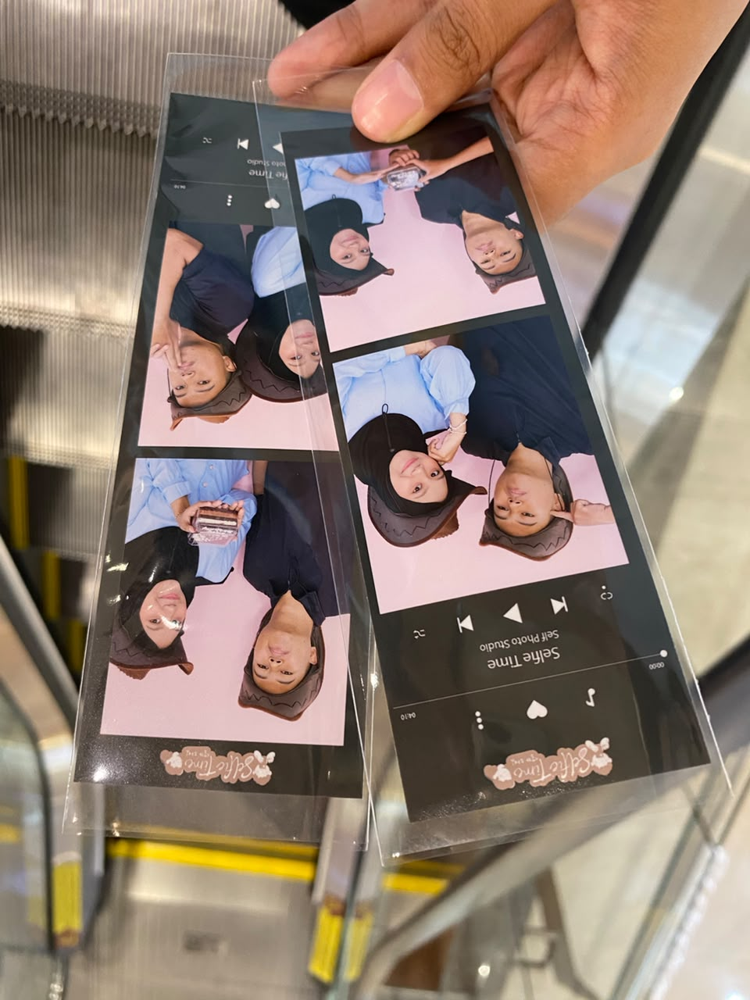
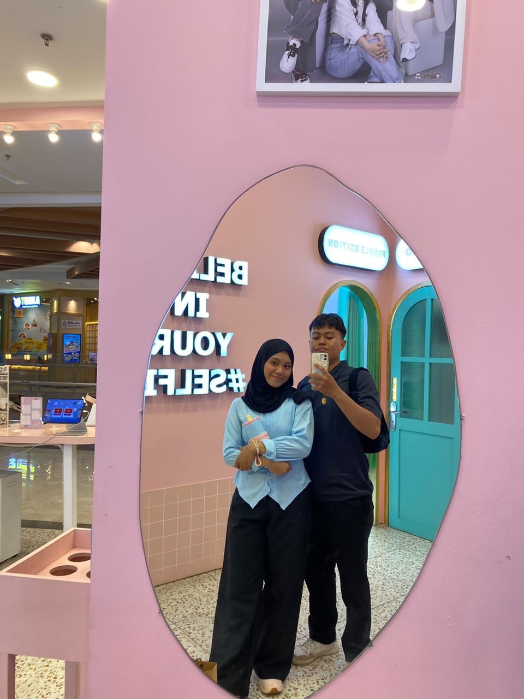
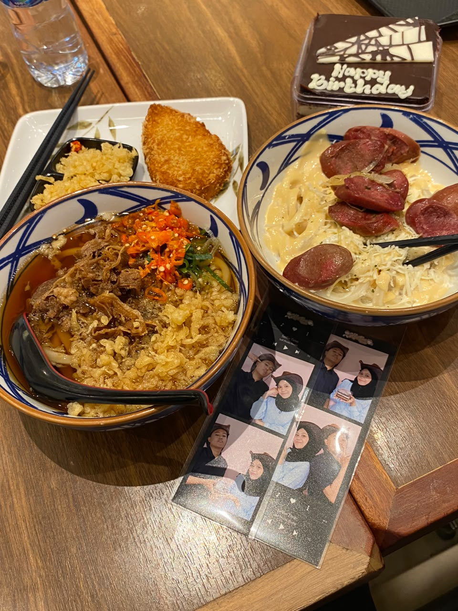
lima potret terakhir untuk hari yang paling ceria, semoga foto ini tidak pernah jadi foto terakhir kita.
kenangan-kenangan kecil kita tersimpan di toples ini. klik toplesnya, biarkan dia memilih satu kenangan untukmu. ✨
kalimat yang terasa seperti milik kita
“Aku memilihmu, dan akan tetap memilihmu. Setiap pagi, setiap malam, setiap fase, tanpa ragu.”
buat Ara“Dalam hidup yang serba cepat ini, aku bersyukur kita memutuskan untuk pelan-pelan saling mengenal, sampai yang paling receh pun kita anggap penting.”
dari hati, Ibi“Rumah itu bukan sebuah tempat. Rumah itu kamu.”
untuk malaikat kecilkulagu yang menemani perjalanan enam bulan kita
klik tombol putar di atas untuk memainkan lagu kita ♥
ada yang ingin kutuliskan untukmu. buka amplopnya, pelan-pelan ya. ✎
klik amplopnya untuk membuka surat dari Ibi
bersyukur untuk yang sudah lewat, berharap untuk yang akan datang
Terima kasih atas setiap momen kecil yang terasa besar: pesan selamat pagi, tawa yang susah berhenti, genggaman tangan di perjalanan pulang, dan kehadiranmu yang membuat hari-hari biasa menjadi tidak biasa sama sekali. Terima kasih sudah menjadi alasan untuk terus memperbaiki diri.
Semoga kita selalu saling menjaga, sesulit apa pun ceritanya. Semoga setiap masalah yang datang kita hadapi berdua, bukan berdua-dua. Semoga cinta ini tumbuh semakin dalam, dan semoga Allah selalu menyatukan kita dalam kebaikan, sampai nanti, sampai jauh, sampai cerita kita selesai ditulis oleh waktu. Aamiin ya Rabbal ’alamin.
dan cerita kita …
enam bulan itu bukan akhir, bukan juga puncak. ini baru halaman yang sedang kita tulis, dan aku tidak sabar membalik halaman-halaman berikutnya bersamamu. terima kasih sudah membaca sampai sini, sayang.
dengan segenap cinta
Buku ini selesai ditulis pada 26 September 2026, untuk enam bulan pertama dari sekian banyak bulan yang masih akan kita lalui bersama.
Ibuku tersayang, terima kasih sudah menjadi halaman terindah dalam hidupku.
Ibi ❤ Ara